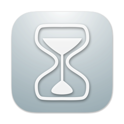

菜单栏倒计时

功能介绍
这是一个菜单栏上的倒计时
This is a countdown on the menu bar
你可以设置到某个以日期时间，或者设置某一段时间为倒计时。
Quickly change your folder color through the right-click menu.
App提供了五种菜单栏按钮的显示样式，它会实时显示当前进度，并在倒计时结束时闪烁，足够显示你的个性。
The app provides five display styles for the menu bar button. It will display the current progress in real time and flash at the end of the countdown, which is enough to show your personality.
在倒计时结束时，你可以使用播放铃声，或一段你设置的文本，App将为你朗读出来。同时，App会弹出通知，以便你能看到提醒。
At the end of the countdown, you can use the ringtone or a text you set, and the app will read it out for you. At the same time, the app will pop up a notification so that you can see the reminder.
你可以设置一个快捷键，快速呼出设置界面。
You can set a shortcut key to quickly call out the settings interface.